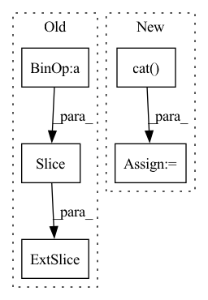

Pattern ID :6351
Before Change
for n, seq in enumerate(scn_seq.cpu().numpy()):
for i,aa in enumerate(seq):
// get num of atom positions - backbone is 4: ...N-C-C(=O)...
n_atoms = 4+ len( SC_BUILD_INFO[VOCAB.int2chars(aa)]["atom-names"] )
mask [n, i, : n_atoms] = 1
if boolean:
return mask.bool()
return mask.nonzero()After Change
batch_mask.append( torch.tensor([SUPREME_INFO[aa]["cloud_mask"] \
for aa in seq]).bool().to(device).unsqueeze(0) )
// concat in last dim
batch_mask = torch.cat( batch_mask, dim=0)
if boolean:
return mask.bool()
return mask.nonzero()
In pattern: SUPERPATTERN
Frequency: 3
Non-data size: 5
Instances Fragment ID: 22135766
Project Name: lucidrains/alphafold2
Commit Name: 3fbddf2be348b349186c787bbf30d1da2f2cd541
Time: 2021-03-03
Author: ericalcaide1@gmail.com
File Name: alphafold2_pytorch/utils.py
M Class Name: AnonimousClass
N Class Name: AnonimousClass
M Method Name: scn_cloud_mask(2)
N Method Name: scn_cloud_mask(2)
M Parent Class:
N Parent Class:
M File Name: alphafold2_pytorch/utils.py
N File Name: alphafold2_pytorch/utils.py
M Start Line: 171
M End Line: 178
N Start Line: 212
N End Line: 221
Before Change
self.config.stacking * self.config.frame_shape[0],
self.config.frame_shape[0]
):
frame = x [batch_index, frame_index :frame_index + self.config.frame_shape[0]]
y[batch_index, frame_index:frame_index + self.config.frame_shape[0]] = standardize_image(frame)
x_start = yAfter Change
def forward(self, x, action, target=None, epsilon=0.0):
x_start = torch.stack([standardize_frame(frame) for frame in x])
x = torch.cat( (x_start, self.internal_states), dim=1)
self.update_internal_states_early(x_start)
x = self.input_embedding(x)
x = x + get_timing_signal_nd(x.shape).to(self.config.device) Fragment ID: 22135768
Project Name: thomas-schillaci/simple
Commit Name: 6faa32e29e1bb756ef80dc6999d6233b91e580db
Time: 2020-11-02
Author: thomas.schillaci@gmail.com
File Name: src/next_frame_predictor.py
M Class Name: NextFramePredictor
N Class Name: NextFramePredictor
M Method Name: forward(5)
N Method Name: forward(5)
M Parent Class: Container
N Parent Class: Container
M File Name: src/next_frame_predictor.py
N File Name: src/next_frame_predictor.py
M Start Line: 260
M End Line: 315
N Start Line: 317
N End Line: 363
Before Change
tmp = torch.cat([x, y], dim=1) // (batch_size, input_length + output_length, num_nodes, feature_dim)
y_preds = []
for pred_idx in range(output_length):
end_idx = pred_idx + input_length
x_ = tmp [:, pred_idx : end_idx, :, :]
batch_tmp = {"X": x_}
y_ = self.forward(batch_tmp) // (batch_size, 1(output_length), num_nodes, 1(feature_dim))
y_preds.append(y_)After Change
y_preds.append(y_.clone())
if y_.shape[3] < x_.shape[3]: // y_的feature_dim可能小于x_的
y_ = torch.cat([y_, y[:, i:i+1, :, self.output_dim:]], dim=3)
x_ = torch.cat( [x_[:, 1:, :, :], y_], dim=1)
y_preds = torch.cat(y_preds, dim=1) // concat at time_length, y_preds.shape=y.shape
return y_preds
def _scaled_laplacian(self, A): Fragment ID: 22135773
Project Name: libcity/bigscity-libcity
Commit Name: 5cbebea9ebc8555f8acd2d1746c783077371e869
Time: 2021-01-30
Author: 35984903+aptx1231@users.noreply.github.com
File Name: trafficdl/model/traffic_speed_prediction/STGCN.py
M Class Name: STGCN
N Class Name: STGCN
M Method Name: predict(2)
N Method Name: predict(2)
M Parent Class: AbstractModel
N Parent Class: AbstractModel
M File Name: trafficdl/model/traffic_speed_prediction/STGCN.py
N File Name: trafficdl/model/traffic_speed_prediction/STGCN.py
M Start Line: 179
M End Line: 190
N Start Line: 179
N End Line: 190